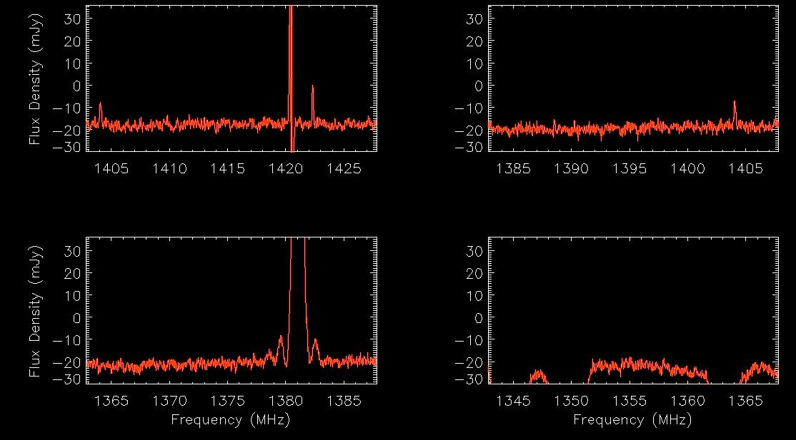
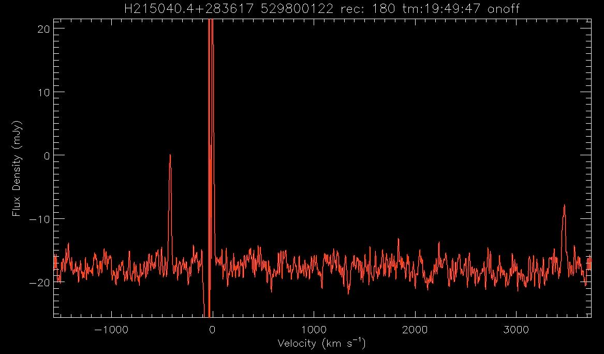
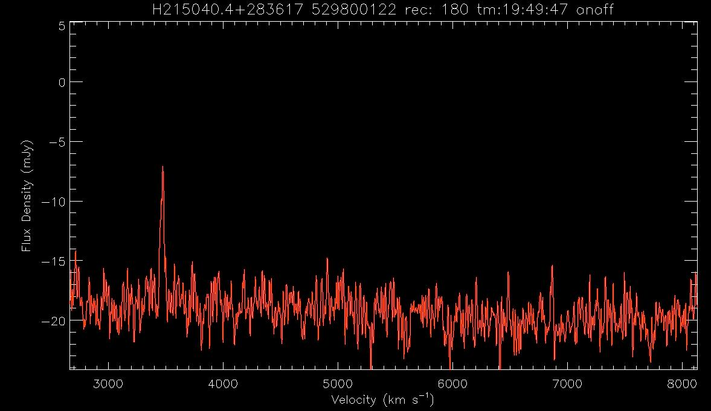
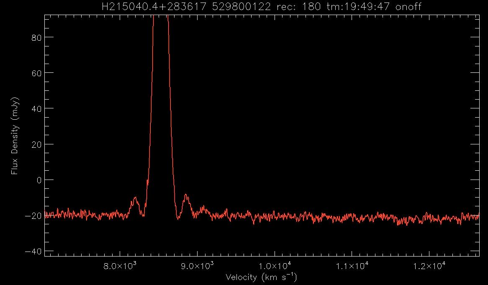
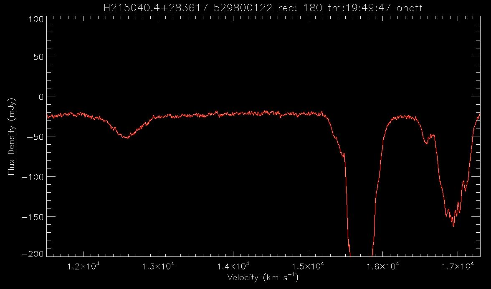
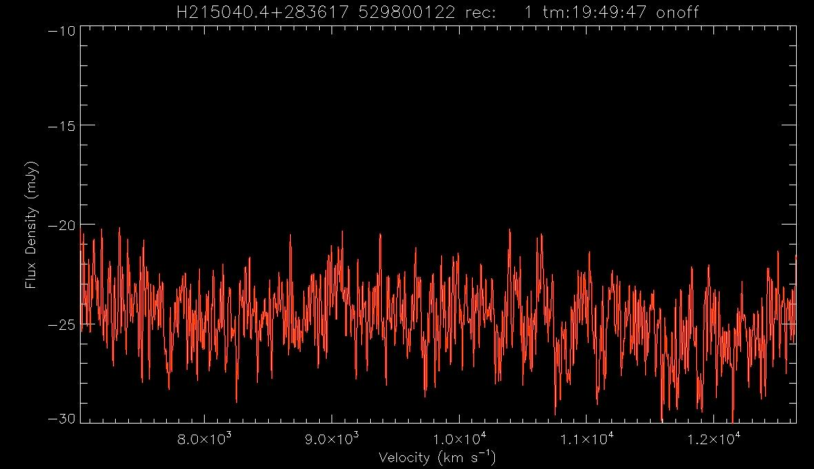
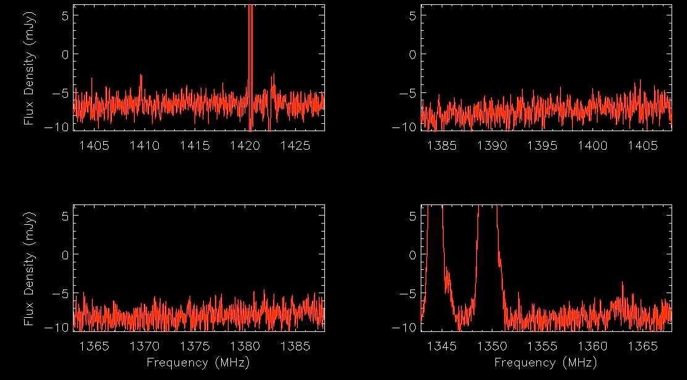
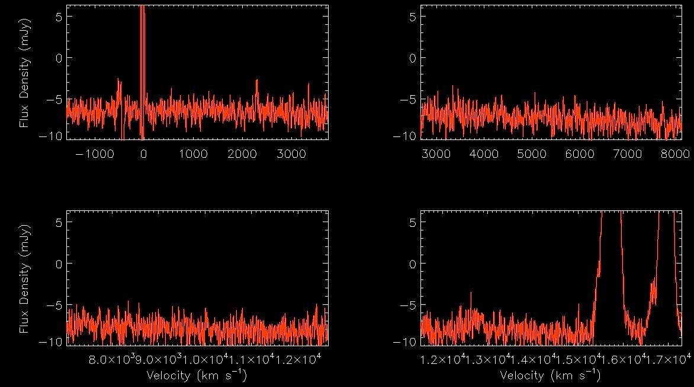
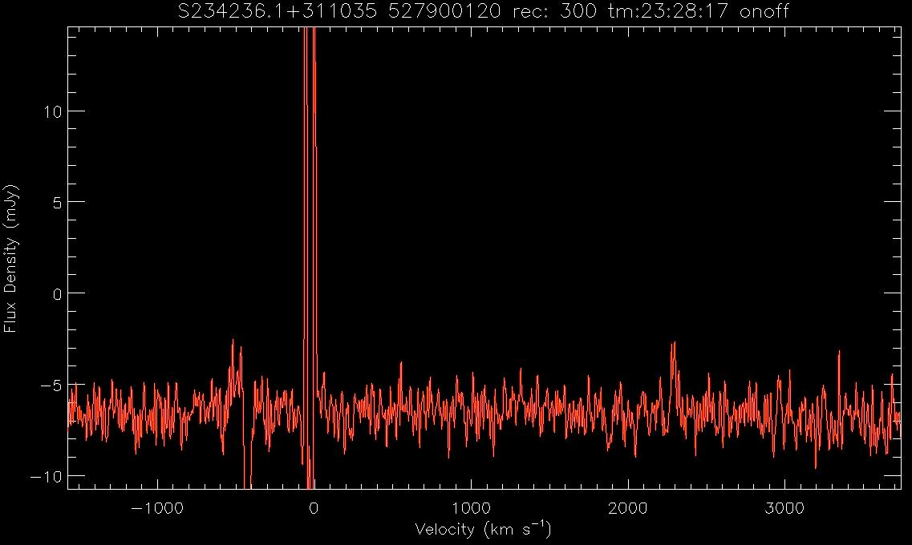
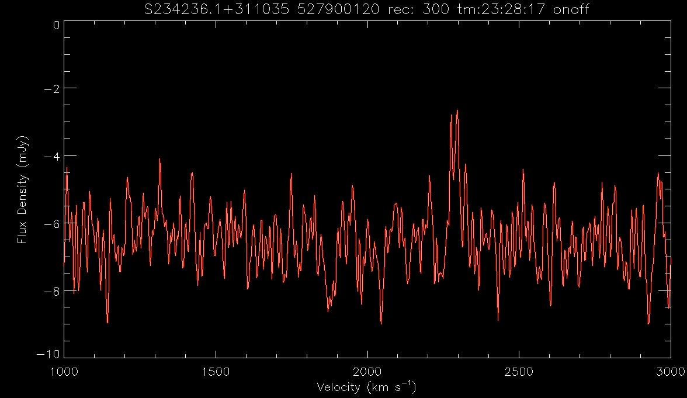

|
Try to finish this activity by 4pm on Wednesday afternoon
|
Useful links:
Using Arecibo for ALFALFA
Using ALFALFA
for science
AO telescope schedule
A2010 observer's page
Observing checklist for LBW observing
L-band wide (LBW) observing for ALFALFA followup
Standard ALFALFA LBW followup observing modes
Instructions on reducing LBW data using IDL_LBW
Rules of the scavenger hunts:
(1): In all cases,
return attendees shall not
reveal the answers to first timers until sufficient effort is
expended. (2): Any bribes must be shared 50:50 with the Scavenger Hunt creators.
(3): You may consult any
source anywhere but please be sure to indicate where you got your information.
And watch out
for bad websites! Actually, if you find any mis-information, make a note
of it for the blog.
UAT16.01 Scavenger Hunt #1:
Using Arecibo and LBW for the Arecibo Pisces-Perseus Supercluster Survey
This scavenger hunt will explore some details of the L-band wide observations we are conducting
for the Arecibo Pisces-Perseus Supercluster Survey (APPSS) and the HI spectra we obtain.
Be sure to familiarize
yourself with the various links above in order to figure out the answers to these questions.
@wasinit
@lbwinit
filename='/share/wappdata.now/wapp.20150902.a2982.0001.fits'
lbwfromwapps, filename, 1, lbwsrc where 1 is the board
lbwquicklook, file='/share/wappdata.now/wapp.20150903.a2982.0000.fits'
lbwquicklook, file='/share/wappdata.now/wapp.20150902.a2982.0001.fits',smo=5,/vel,board=1,
lbwquicklook, file='/share/wappdata.now/wapp.20150902.a2982.0001.fits',smo=5,/vel,board=1,xrange=[700,1100]
AGC 310858 is a calibrator with GPS
310858 H215040.4+283617 215040.3 +283527 0 SW 3476 calib 15.10.25/wapp.20151025.a2982.0007 det@3500 + GPS
wapp.20151025.a2982.0007
310858 2150403+283527 12 10 190 0 0ext? 170 0 0 0 0 0 39 204 3476 28 6 A50J1759 770 00 025000 0
lbwquicklook, file='/share/wappdata.now/wapp.20151025.a2982.0007.fits'

lbwquicklook, file='/share/wappdata.now/wapp.20151025.a2982.0007.fits',/vel
 lbwquicklook, file='/share/wappdata.now/wapp.20151025.a2982.0007.fits',/vel,board=1
lbwquicklook, file='/share/wappdata.now/wapp.20151025.a2982.0007.fits',/vel,board=1

lbwquicklook, file='/share/wappdata.now/wapp.20151025.a2982.0007.fits',/vel,board=2

lbwquicklook, file='/share/wappdata.now/wapp.20151025.a2982.0007.fits',/vel,board=3

lbwquicklook, file='/share/wappdata.now/wapp.20151025.a2982.0007.fits',/vel,board=4,yrange=[-200,100]

lbwquicklook, file='/share/wappdata.now/wapp.20151025.a2982.0007.fits',/vel,board=3,yrange=[-30,-10],/gps

AGC 335430 APPS
335430 S234236.1+311035 234236.1 +311035 0 SW 0 1420.4 APPS 15.10.06/wapp.20151006.a2982.0011 det@2350
335430 2342361+311035 22 18 175 0 0 310 0 0 0 0 0 0 0 0 0 0 00 00 00 00 008000 0
DR9Navi
DR12Navi
DSS2blu.03
NED1.0

lbwquicklook, file='/share/wappdata.now/wapp.20151006.a2982.0011.fits',/vel

l
lbwquicklook, file='/share/wappdata.now/wapp.20151006.a2982.0011.fits',/vel,board=1

lbwquicklook, file='/share/wappdata.now/wapp.20151006.a2982.0011.fits',/vel,board=1,xrange=[1000,3000],yrange=[-10,0]

@wasinit2
@lbwinit
wappfile='/share/pserverf.sda3/wappdata/wapp.2015MMDD.a2941.****.fits'
;or, if the files were just observed:
wappfile='/share/wappdata.now/wapp.2015MMDD.a2982.****.fits'
board = 1
lbwfromwapps,wappfile,board, lbwsrc
lbwbaseline, lbwsrc
lbwmeasure,lbwsrc [Only if you have a non-gaussian detection!!!!]
;or
lbwmeasure,lbwsrc,/gaussian [Only if you have a gaussian detection!!!!]
FOR ABOVE*************
wappfile='/share/wappdata.now/wapp.20151006.a2982.0011.fits'
board = 1
lbwfromwapps,wappfile,board, lbwsrc
lbwbaseline, lbwsrc
1
lbwsmooth, lbwsrc, 'b5'
131387 H030801.4+301230 030802.9 +301229 0 SW 5195 1420.4 calib 15.11.30/wapp.20151130.a2982.0027 det@5200
15.11.07/wapp.20151108.a2982.0002 det@5200 strong GPS
lbwquicklook, file='/share/wappdata.now/wapp.20151130.a2982.0027.fits'
lbwquicklook, file='/share/wappdata.now/wapp.20151130.a2982.0027.fits',/vel,board=2,yrange=[-10,50]
lbwquicklook, file='/share/wappdata.now/wapp.20151130.a2982.0027.fits',/vel,board=2,yrange=[-10,50],xrange=[4500,6000]
wappfile='/share/wappdata.now/wapp.20151130.a2982.0027.fits'
board=2
lbwfromwapps,wappfile,board, lbwsrc
lbwbaseline, lbwsrc
<--
AGC 115791 APPS
115791 S011501.5+302042 011501.5 +302042 0 SW 0 1420.4 APPS 15.10.07/wapp.20151008.a2982.0002 det@2800
115791 0115015+302042 20 17 180 0 0 301 0 0 0 0 0 0 0 0 0 0 00 00 00 00 008000 0
DR9Navi
DR12Navi
DSS2blu.03
NED1.0
lbwquicklook, file='/share/wappdata.now/wapp.20151008.a2982.0002.fits',/vel
-->
AGC 104214 APPS
104214 S000738.0+332025 000738.0 +332025 0 SW 0 1420.4 mhpps 15.11.07/wapp.20151107.a2982.0016 det@4700
104214 0007380+332025 30 25 185 0 0 180 0 0 0 0 0mph 0 0 4700 0 0 G8789 00 00 008000 0
DR9Navi
DR12Navi
DSS2blu.03
NED1.0
lbwquicklook, file='/share/wappdata.now/wapp.2015
1.7 ALFALFA Team Trivia: Part II (Some of us think this is important too!)
a. In what 1984 movie did the unsympathetic government agent say: " Do you seriously expect me to tell the
President than an alien has landed, assumed the identity of a dead housepainter from Madison Wisconsin and
is presently out tooling around the countryside in a hopped up orange and black 1977 Mustang?"
d. In the movie "Some Like It Hot", who (what actor) utters the famous closing words "Well, nobody's perfect."?
e. What is the temperature at which paper burns, according to
the famous futuristic 1967 film starring Julie Christie and Oskar Werner?
c. What is odd about the rotation of Venus, and how and when was that determined?
This page created by and for the members of the
ALFALFA Survey Undergraduate team
Last modified: Fri May 13 18:59:59 EDT 2016 by martha
{kind=link}
{kind=link}
{kind=link}
{kind=link}
{kind=link}
{kind=link}
{kind=link}
{kind=link}
{kind=link}
{kind=link}